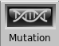
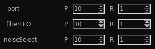
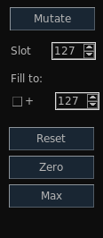

| Home | Contents | Synth Catalog | Previous: Bank | Next: Group |
Llia provides two methods for generating random programs:
Not all synth types will implement random program generation. Some may implemented one type of generator and not the other.
Random programs are created by clicking the RND button at the bottom of the program bank editor. The generated programs are created from scratch and in most cases there is no control over the result.
In a few cases a synth may offer controls to influence or give hints to the generator. Currently (2017.12.24) ALGO is the only synth which provides these controls. Use the ALGO editor RND tab to access random hint controls.
A mutation generates new programs by making random changes to an existing program. Synths which implement mutations will have a mutation tab on their editor.
The Mutation tab will have several lines of controls like the following:
 Each line controls a single parameter, from left to right:To the left of the parameters are general controls.
| Home | Contents | Synth Catalog | Previous: Bank | Next: Group |